read.csv2("./DATA/bd.csv") # pour acceder au données
ggsave("./EXPORT/plot/monplot.png")Bonnes pratiques, Git, Markdown et Quarto avec R
Introduction
Ce document a pour but de rassembler l’ensemble des choses qui font les bonnes pratiques sous R. Ce n’est pas exhaustif et ne regroupe que des choses auxquelles j’ai pensé pour le moment. Il doit être vivant donc n’hésitez pas si vous voulez ajouter des choses.
Travailler sous un projet R
C’est quoi un projet R
Les projets RStudio sont des outils qui contribuent à assurer la reproductibilité d’un traitement statistique. Ils facilitent la collaboration entre plusieurs développeurs, mais aussi l’organisation du travail lorsqu’on travaille seul.
Le principe d’un projet RStudio est de rassembler tous les éléments de contexte propres à ce projet : espace de travail, historique de commandes, variables d’environnement, options de R, etc. Utiliser un projet RStudio présente donc de multiples avantages :
Il centralise l’ensemble des éléments d’un projet : codes, réglages, documentation, et sorties (articles, présentations)
Il facilite la compréhension du traitement pour les utilisateurs extérieurs et rend plus aisées les évolutions postérieures du projet
Il organise l’interaction entre les fichiers (plusieurs codes, rédaction de documents avec R markdown…) et avec les données
Il renforce la portabilité : le répertoire de travail par défaut d’un projet est le dossier où se situe le fichier .Rproj. Cela rend les scripts indépendants de l’arborescence de la machine. Ainsi, si vous avez un code traitement.R situé dans le même dossier que le fichier .Rproj, alors le chemin de ce code est ./traitement.R, où que soit situé le dossier du projet.
Création d’un projet R studio
À l’ouverture de R, la session est hors projet. On peut le voir en haut à droite de la page.
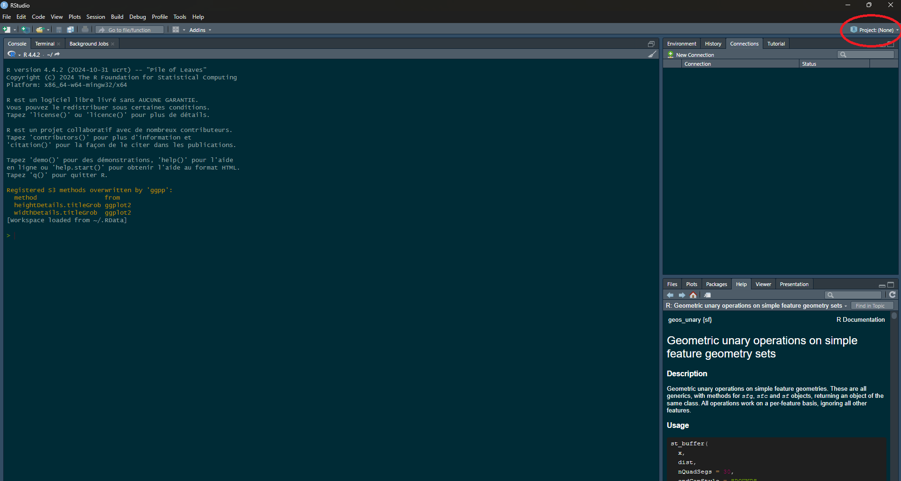
Pour créer un projet, il suffit de cliquer sur le bouton à gauche et de suivre les étapes.

Créer un nouveau répertoire.
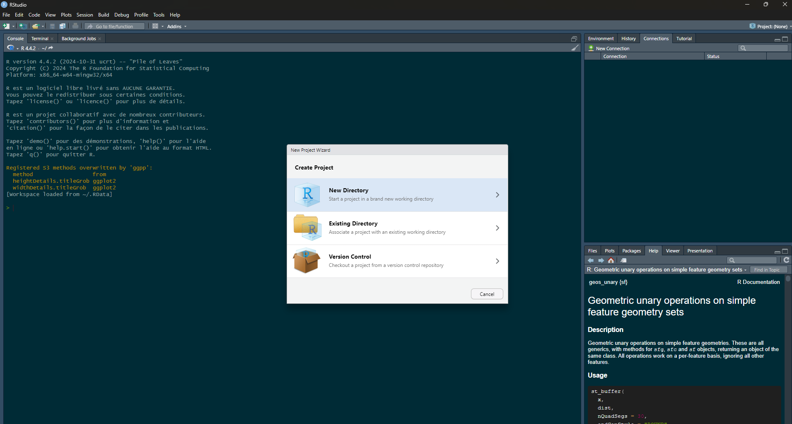
Créer un nouveau projet.
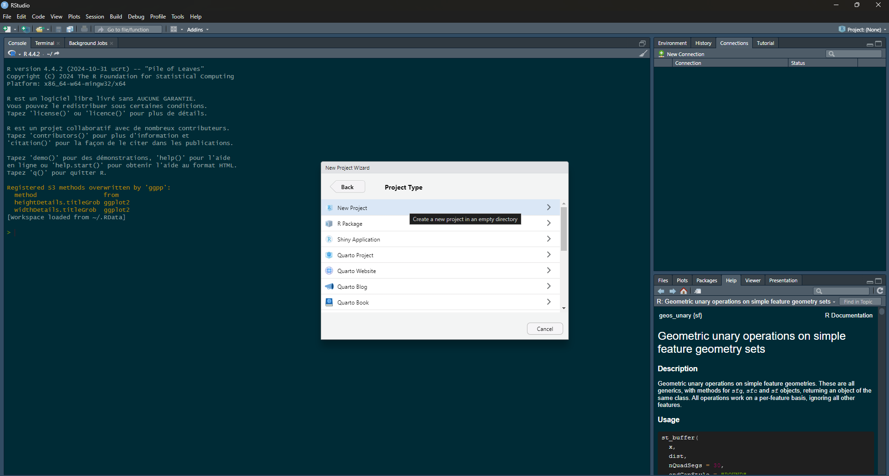
Nommer le projet.
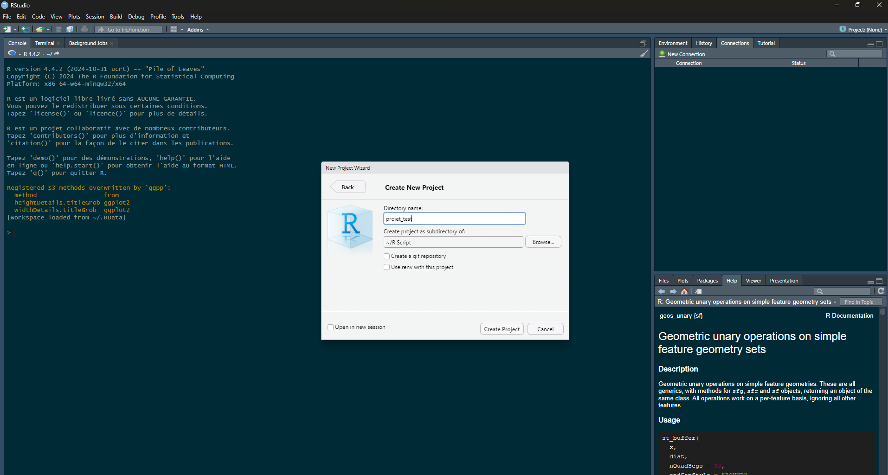
Et on se retrouve dans le projet qu’on vient de créer.
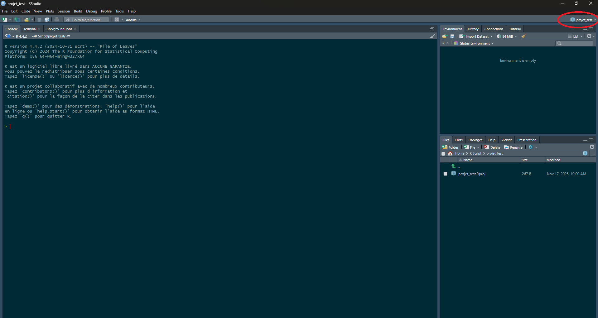
Travailler dans un projet R studio
Maintenant qu’on se trouve dans un projet R, on peut voir dans la fenêtre “File” en bas à droite qu’il n’y a que le projet dans notre fichier. Si on se déplace dans le répertoire de notre ordinateur, il suffit de cliquer sur le projet pour retourner à la racine du projet. On peut aussi se déplacer dans les autres fichiers à partir de cette fenêtre et revenir à la racine du projet en cliquant sur l’icône bleue à droite.
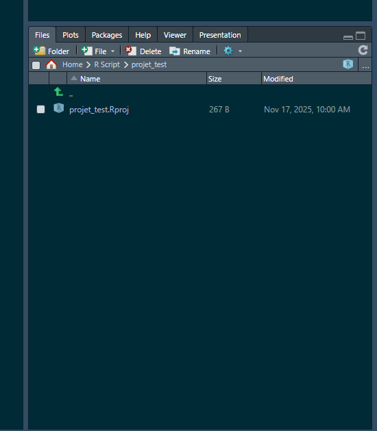
On peut créer dans ce projet une arborescence de fichiers pour organiser son travail. Il suffit de le créer en appuyant sur folder. Moi personnellement je crée toujours 3 fichiers par default:
DATA : il contient toutes les données
SCRIPT : il contient tous les scripts (manipulation de données, analyses, visualisation, etc.)
EXPORT : il contient toutes les sorties (données nettoyées, plots, .Rdata)

Il peut y avoir ensuite des sous-dossiers à votre convenance.
Pour travailler dans un projet R, il suffit maintenant d’utiliser des chemins relatifs.
Chemins relatifs
Un chemin relatif donne la localisation de votre fichier dans l’arborescence, à partir de la racine de votre projet.
Documentation des scripts
La documentation d’un script est très importante, surtout dans l’optique de produire un travail reproducible et transmissible.
Je préconise à minima :
un titre explicite
le nom de l’auteur
Date de la dernière mise à jour
La version de R (pour les problèmes de dépendances)
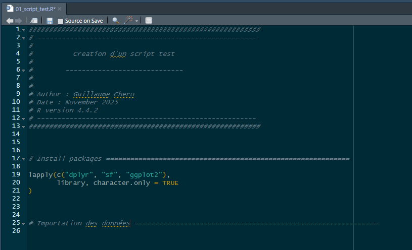
Ensuite dans le corps du script, il est possible de mettre en place des titres pour se retrouver dans les différentes étapes, en utilisant la mise en page suivante :
# Titre niveau 1 -------------------------------------
# ou
# Titre niveau1 =====================================
## Titre niveau 2 =====================================
### Titre niveau 3 =====================================On peut ensuite retrouver les chapitres en bas et à droite pour se deplacer dedans.
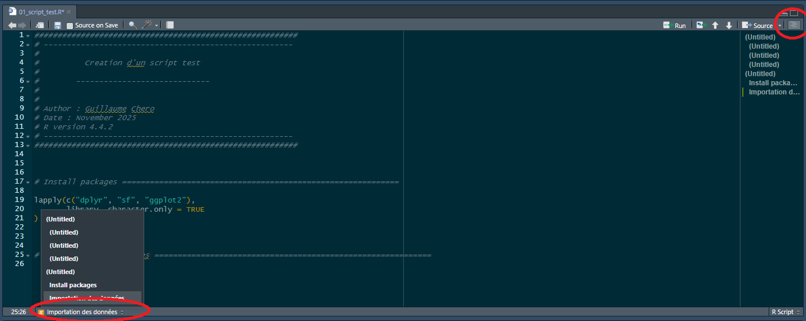
Ne pas oublier de mettre le plus d’informations possible sur le pourquoi de chaque étape, et des informations pour le soit du future ou un autre utilisateur du script (exemple: où sont les données)
# Importation des données ================
data = dplyr::starwars # le jeu de données est dipsonible dans le dossier "./SCRIPT"Fonction {source}
Pour éviter d’avoir des scripts trop long, il est possible de séparer les actions dans différents script et de les appeler dans un seul script final. Pour cela on peut utiliser la fonction {source()}.
Par exemple, on peut créer une script de nettoyage des données:
- ./SCRIPTS/01_clean_data.R
Puis un second script qui analyses les données issue de ce script:
- ./SCRIPTS/02_Analyses.R
Ce second script peut faire tourner tous le premier script en utilisant la fonction {source}, en début de code:
source("./SCRIPTS/01_clean_data.R")Cela permet d’avoir un code plus court, plus simple à comprendre et à debugger.
Conclusion
Le projet R permet de travailler de manière organiser et propre.
{git}
git est un logicielle que l’on doit installer sur son ordinateur qui va nous permettre de suivre les modifications que l’on fait sur un projet (seul ou à plusieurs). Cela s’appelle le Version control. Il se manipule normalement par des lignes de commande, mais Rstudio permet (quasiment) de s’en passer en utilisant l’interface graphique.
git est utilisé pour faire des “snapshots” de l’état du projet à chaque sauvegarde (‘commit’)
git permet de travailler sur une seul et même script et de suivre ses modifications, plutôt que de faire des versions différente non traceable (V1, V2, V3, V3_def, V3_def_final, V3_def_final_test_error, etc.)
Installation
Il est necessaire d’installer git sur la machine avant tout. On peut le telecharger et l’installer depuis https://git-scm.com/install/.
Installer
Choisir “Use git from the Windows Command Prompt”
Choisir “Checkout as it, commit as-is”
Configuration
Il faut expliquer à RStudio qu’on a installé git et lui donner le chemin d’accès. Dans Global Option:
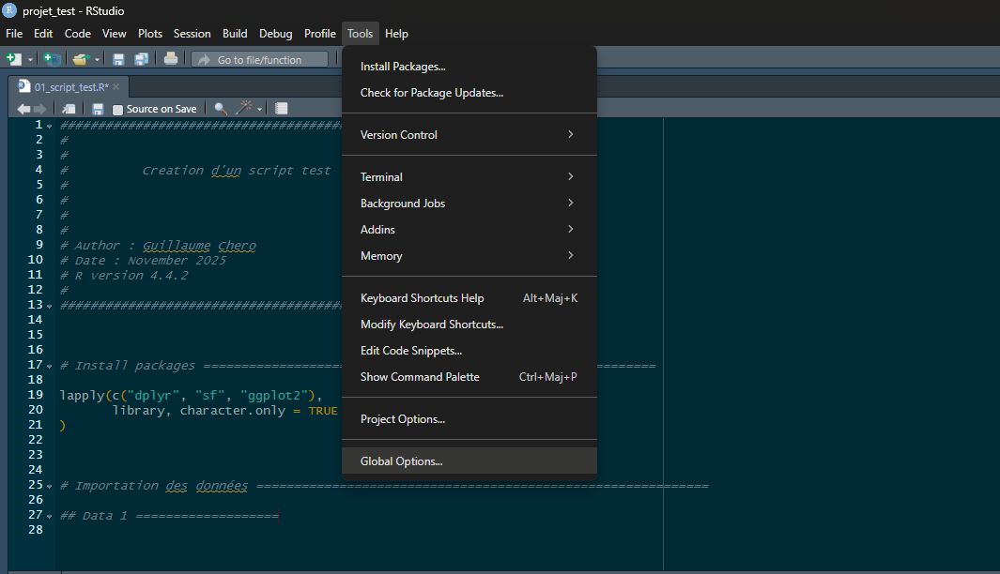 Vérifier le chemin vers l’exécutable git:
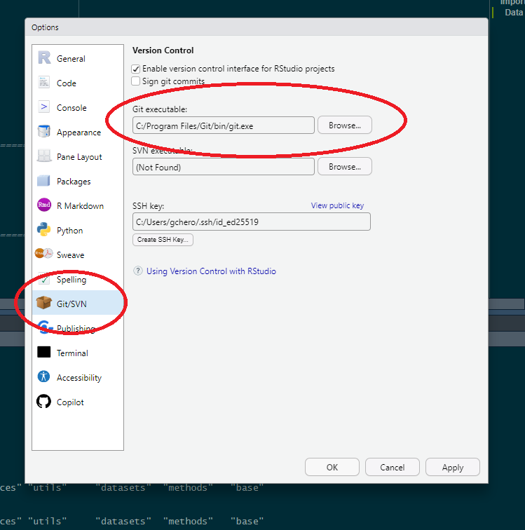
Initialisation d’un projet git
Le versionnement de git fonctionne avec une instance en ligne, il existe notamment Gitlab et Github. L’université de La Rochelle met à disposition un GitLab que je vous propose d’utiliser.
Il vous suffit de vous connecter.
Créer un projet
Utiliser le bouton “New Project”:

Le nom du projet doit respecter plusieurs règles :
en minuscule
sans espace ou underscore
pas de chiffre
Il ne faut pas cocher “Initialiser un README”.
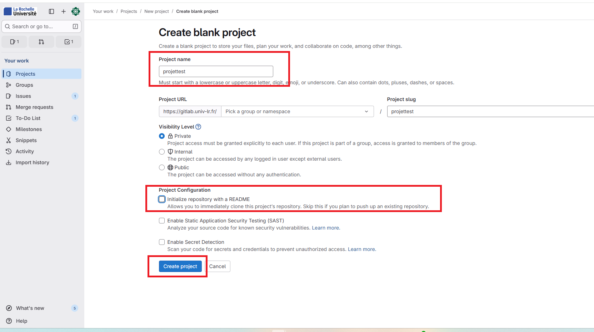
Vous devez choisir un “Namespace”, pour commencer on va choisir le nom d’utilisateur. Mais on peut le placer dans un projet ou un dossier.
Configurer git sur RStudio
Le package {usethise} permet de se passer des lignes de commande pour la configuration de git sur R. Ces instructions sont à faire une seule fois et ne sont pas necessaire à la création de chaque projet.
usethis::use_git_config(scope = "user",
user.name = "nom prenom",
user.email = "votre@email.fr")Access Tokens
Pour plus de sécurité, la connection entre Gitlab et Rstudio se fait par l’intermediaire d’un token.
Le token est généré depuis gitlab, dans “Preferences”,
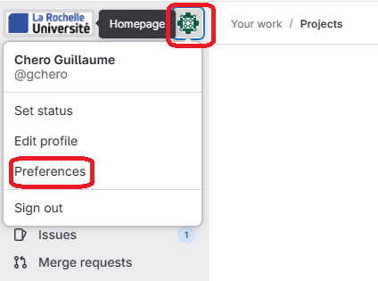 Puis dans ‘Access Token’, il suffit de générer un “New Token”:
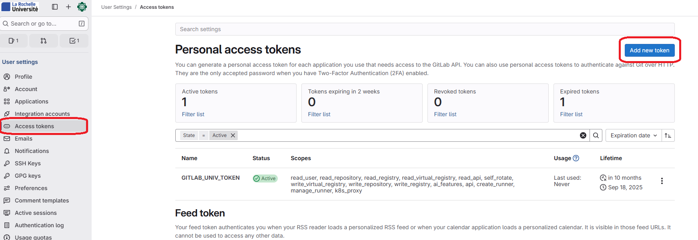
Il faut ajouter un nom, une date d’expiration et cocher tous les “scopes”.
Ensuite, copier le token et stockez le !
gitcreds::gitcreds_set(url = "https://gitlab.univ-lr.fr")Il faut copier le token de GitLab.
usethis::use_git_config(scope = "user",
init.defaultBranch = "main")Retour à notre projet
On peut maintenant recuperer le lien “https” en cliquant sur le bouton “clone”:
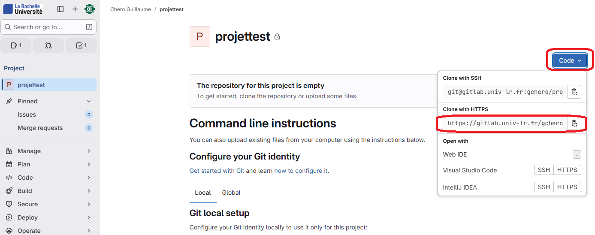
Création d’un nouveau projet sous R
On peut créer un nouveau projet sur R et cette fois, en selectionnant “Version Control”, puis “GIT”:

Il faut ensuite renseigner l’URL du projet créé sur Gitlab:
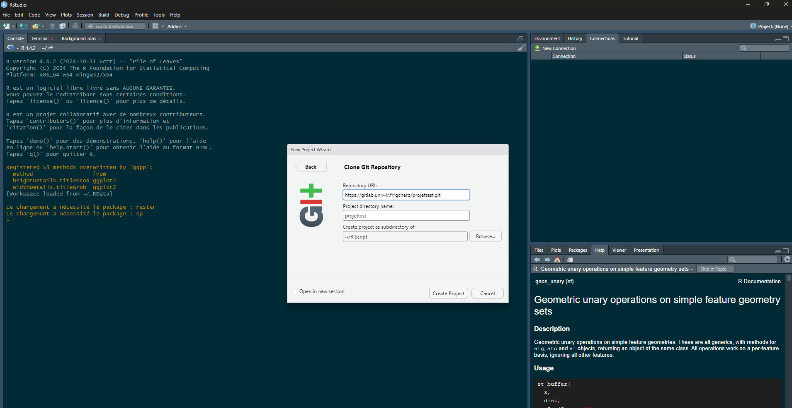
Vous venez de créer un projet relier à Gitlab.
Onglet Git sur RStudio
Le projet git permet d’activer un nouvel onglet dans la gestion d’un projet R. L’onglet git permet de suivre les changements qui vont s’afficher dans l’interface.

Pour sauvergarder ces modification, il faut declencher un commit. Un commit est une photo de l’état du projet à un moment donné. Pour le déclencher, il suffit de cliquer sur le bouton. Il fait apparaitre une fenêtre. Dans cette fenetre, on voit à gauche les modifications. Chaque modification peut être associé à un commit, qui prend la forme d’un message. Il suffit de selectionner les modifications à gauche et de les décrire à droite, avant de cliquer sur “Commit”. En cliquant sur commit on prend un photo de l’état du projet.
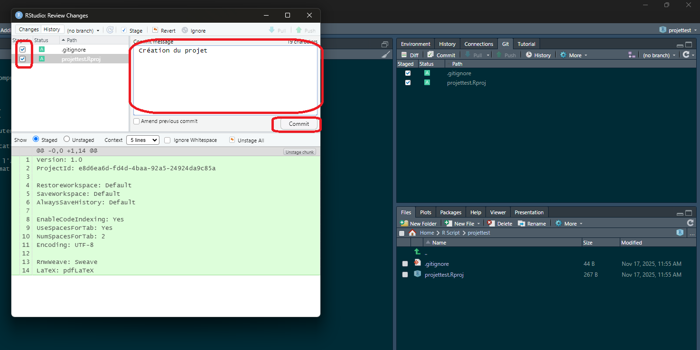
La descrition des commits est importante car ils permettent de suivre les modifications du projet. Il faut être le plus precis possible sur ce qu’amène les modifications au projets :
ajout de données
modification d’un script en particulier
resolution d’une erreur precise
etc.
Cependant, une fois le commit fabriqué, l’information est stocké en local.
Il faut appuyé sur push pour l’envoyer sur le repository en ligne.

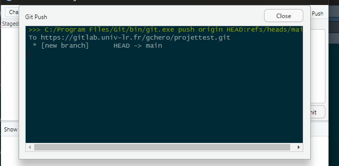
Vous pouvez dès à présent voir vos modifications en ligne.
Commit
Le panneau git de RStudio indique en temps réel l’état du projet. Le statut des different fichiers est affiché par un code couleur :
jaune: nouveau fichier
vert: en cour de commit
bleu: modifié
rouge: supprimé
Push / Pull
Push : Une fois que les commit sont effectués, il faut effectuer un push pour envoyer sur le repository en ligne (Gitlab)
Pull : permet de rapatrier les modifications faites par d’autres utilisateur ou vous même, presentes sur le repository en ligne. Le projet RStudio en local est alors modifié en consequence.
Explorer l’historique
Il est possible de visualiser l’historique de commit depuis le gitlab.
.gitignore
Un fichier .gitignore permet de dire à git de ne pas surveille les changement de tel ou tel fichier (dossier) et de ne pas l’envoyer sur le repository. Le fichier “.gitignore” doit se trouver à la racine du projet.
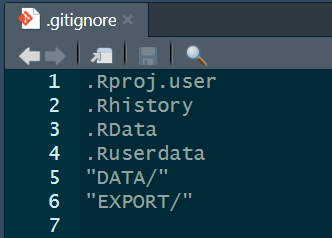
On peut ajouter un fichier à la liste en utilisant :
usethis::use_git_ignore("fichier.html")Les branches
Il est possible de travailler sur une branch differente de la branche principale appelé “main”. C’est utile pour faire de l’experimentation sans vouloir tout casser ou pour travailler à plusieurs. Il existe plusieurs façon de créer une branche. Ici je présente la façon qui celon moi est la plus facile pour suivre les modification, en passant par des ‘Issues’ et des “Merge request”.

Issues
Les “Issues” sont crées depuis le Gitlab, dans le projet. Il suffit de cliquer sur “Issues” et “New issue”.
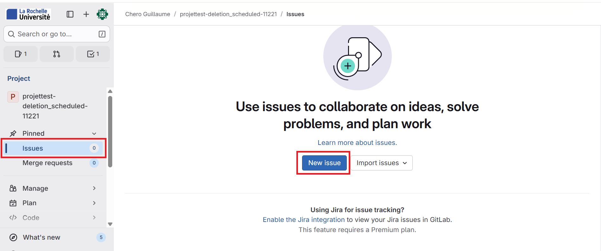
Une “Issue” doit être documenté:
un nom
une description
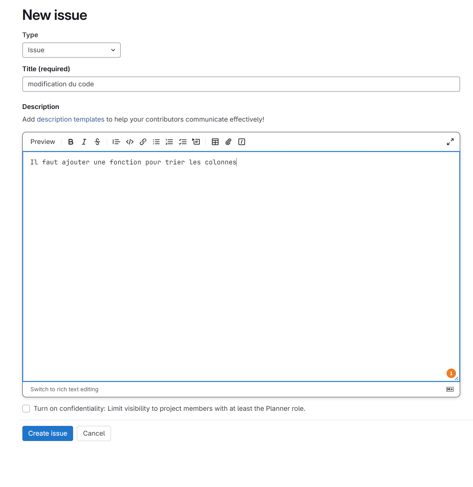
Une fois que l’issue est créée, il faut mettre en place une “Merge request” qui permet de créer une nouvelle branche pour travailler dessus.
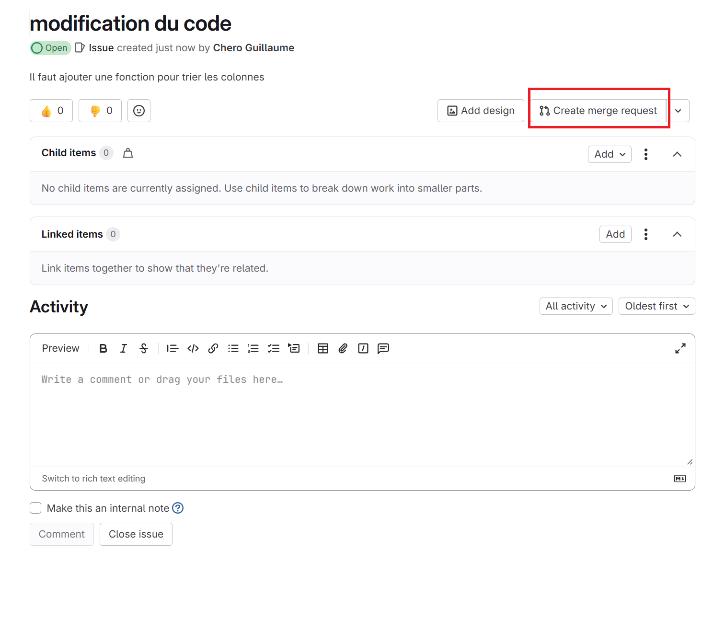
Merge request
La mercge request met en place une nouvelle branche de travaille. Il faut lui donner:
la branche d’origine
le nom de la nouvelle branche
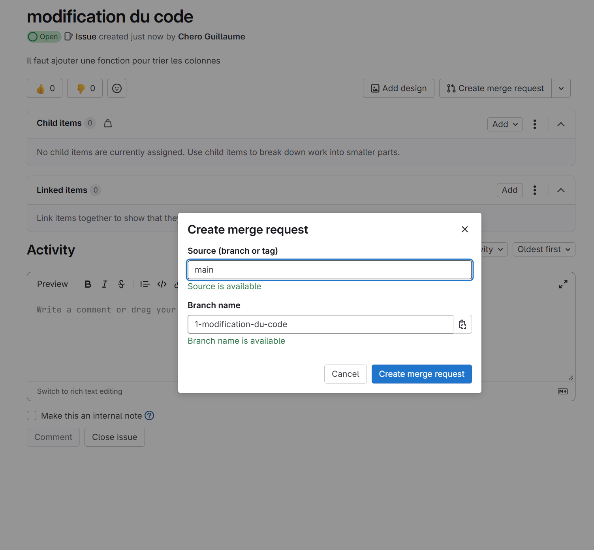
La merge request doit être assigné à un utilisateur et elle peut être lancée.
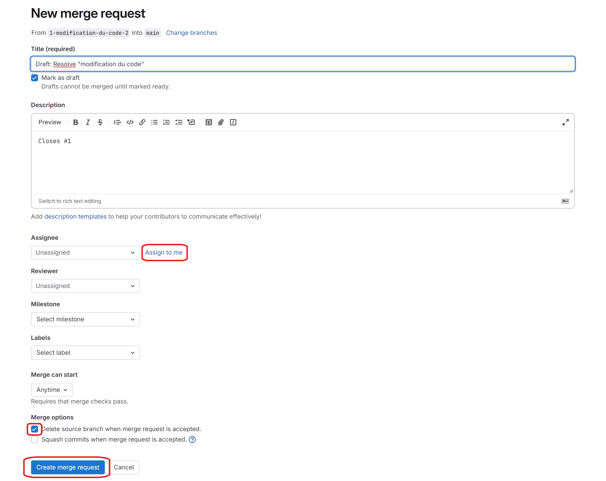
La nouvelle branche existe !

Pull branch
Maintenant, on peut retourner sur R et travailler sur notre nouvelle branche. Il faut donc “Pull” les mises à jours. on peut voir que la nouvelle branche est importée.
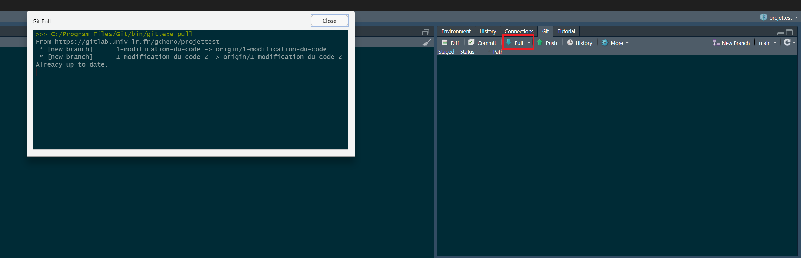
Il faut ensuite choisir cette branche dans le menu deroulant.
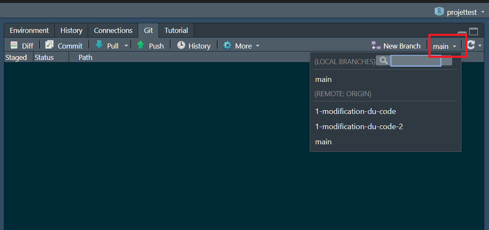
On peut à partir de maintenant travailler sur la branche, faire des modifications et surtout continuer de documenter notre travail en faisant des commit et des push. On travaille de la même façon mais sur une branche différente.
Merge les branches
Quand on a finit de travailler et de tester notre code, et qu’on est sur de notre travail, on peut ramener les modifications faite sur notre branche secondaire dans la “main”. Il faut pour cela retourner sur le Gitlab dans notre merge request.
On peut voir que des modifications ont été apporté.
Il faut cliquer sur merge et “Review”.
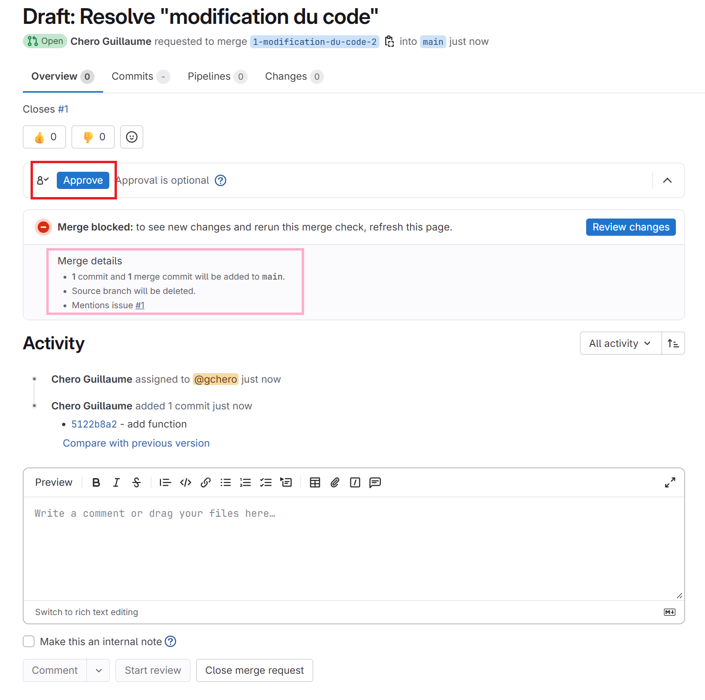
On peut la definir “as ready”. Et cliquer sur “Merge”
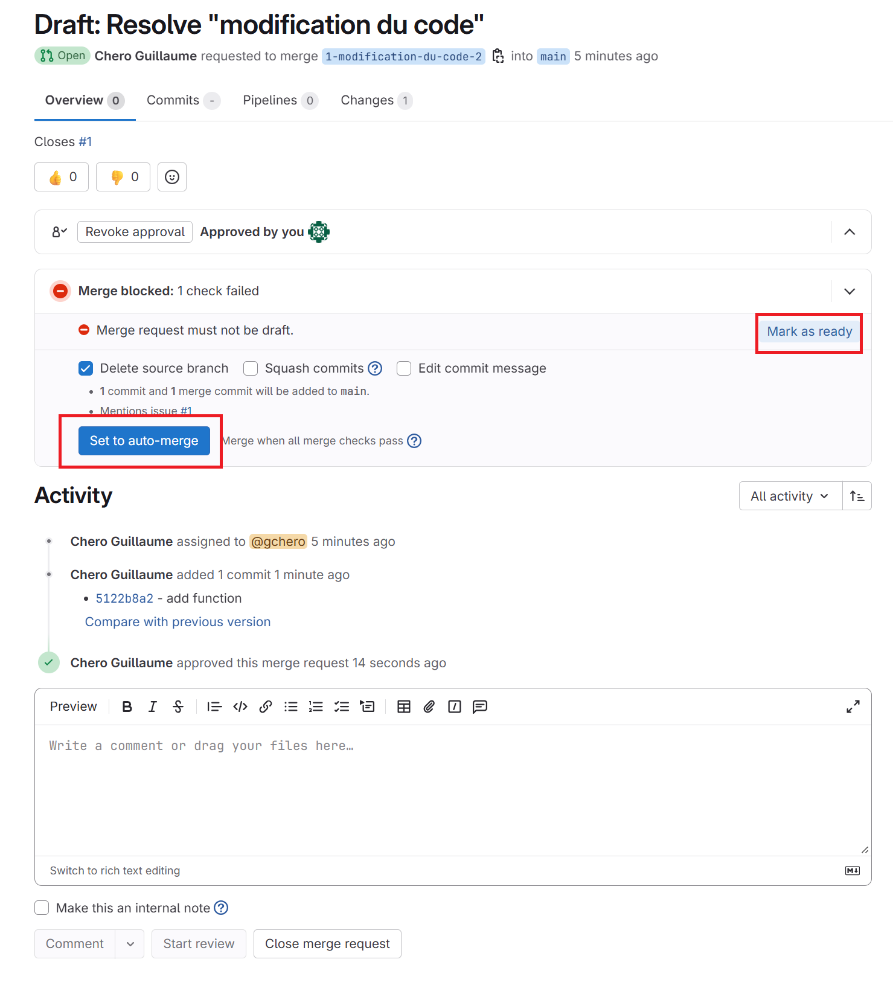
A partir de là, notre branche secondaire est fusionné avec notre branche principale.
On peut retourner sur R pour “Pull” nos modifications et retourner travailler sur la branche principale.
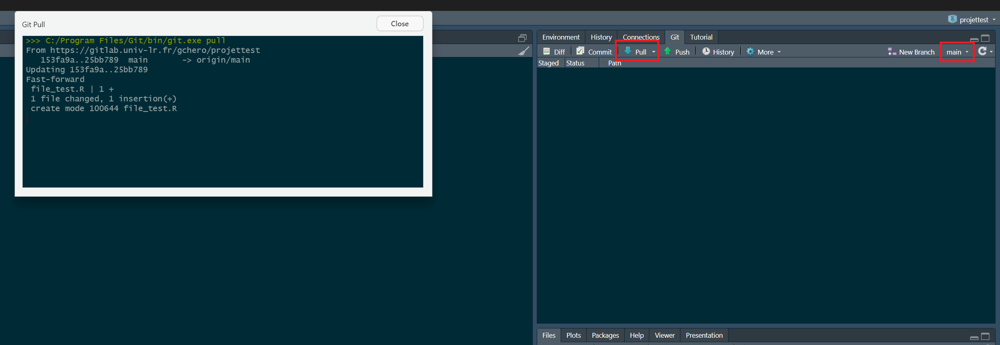
Le système de branche permet de travailler sur des nouvelles versions de notre code sans risque de tout casser. Si la nouvelle branche ne marche pas, il suffit de l’abandonner et de retourner sur la branche principale. C’est aussi très pratique quand on travaille à plusieurs sur un même projet en même temps.
Associer un projet existant à Git
On vient de montrer comment créer un nouveau projet directement à partir de Gitlab. Mais on peut aussi vouloir versionner un projet à posteriori. Pour cela il faut creer un projet avec le même nom que son projet R dans Gitlab, puis dans RSturio, on peut utiliser le package {usethis}:
usethis::use_git()
# dire oui à tout
usethis::use_git_remote(
"origin",
url = "https://gitlab.univ-lr.fr/gchero/projettest.git",
overwrite = TRUE
)
gert:git_push(remote = "origin")Quarto et Markdown
Les outils Quarto et Rmarkdwon permettent de produire des documents pourvant melanger du code, du texte, des figures, des sorties de modèles et des analyses. Les rapports dynamiques générés à partir d’un fichier Quarto ou Markdown s’intègrent dans le concept de Recherche reproductible , puisque l’analyse statistique réalisée peut être reproduite, strictement à l’identique, par quiconque dispose du fichier.Rmd. Les documents peuvent être générés sous divers formats : html, pdf ou docx.
Markdown
Création
Le mieux est de créer le fichier au sein d’un projet R, en cliquant sur “New File> R Markdown”.
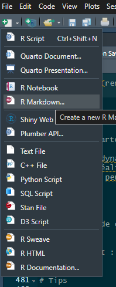
On peut déja à partir de la definir le titre, l’auteur et le format de sortie. Toutes ces informations pourront être modifié par la suite dans le code. Cela nous genère un fichier .Rmd. C’est ce fichier qui va contenir tout le code.
Generer la sortie
Pour generer le document de sortie, il suffit de cliquer sur “Knit”.
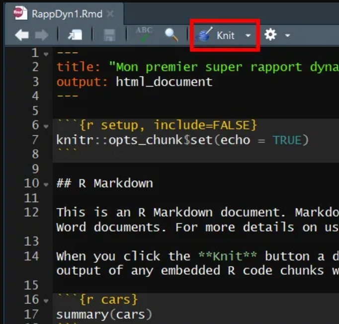
Il va ensuite generer le document au format choisi. Il doit apparaitre dans la fenêtre “Viewer”. Vous pouvez aussi choisir dans le menu deroulant, le format de sorti voulu et le fichier de sorti
La sortie en PDF peut necesitter d’installer TinyTeX (tinytex::install_tinytex()).
Organisation
L’en tête
L’en-tête est contenu entre deux séries de pointillés. Par défaut, il contient deux types d’éléments : le titre du document, et son format de sortie.
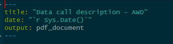
L’en tête peut contenir plusieurs autres informations:
title
date
output: pdf_document / html_document
author
Il est suivi par le set up. Ilpermet de régler les options par défaut de tous les chunks. Par exemple, on va pouvoir indiquer que l’on ne veut pas faire les messages et les warnings qui pourraient être générés lors de l’exécution des chunck. Au lieu de le faire pour tous les chunks, on peut le faire une seule fois ici.
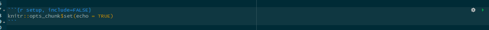
Les chunks
Le code d’un fichier Markdown s’organise autour des chunks. Le chunk est la partie du fichier markdown ou le code s’execute.
Il est de la forme suivante :
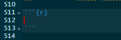
On peut generer un chunk de plusieurs façon:
en l’ecrivant avec le clavier (si vous avez du temps à perdre)
Ctrl + Alt + I
Executer les chunks
Les chunks peuvent être executer sans faire de rendu automatique. Il suffit de cliquer sur la flèche verte à la fin du chunk. On peut aussi decider de faire tourner tous les chunks jusqu’à celui la en cliquant sur le bouton à coté.
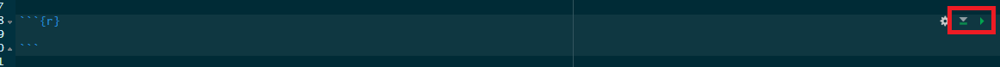
Parametres du chunk
Un chunk peut être executé de différente manière en fonction des paramètres à mettre entre {}.
- un nom: pour suivre les erreurs lors de la compilation, on peut mettre un nom différent à chaque chunk. Ce nom doit être sans espace et sans majuscule.
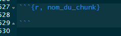
echo=FALSE: cache le chunk mais il tournera et affichera la sortie
results=‘hide’: ne montre pas les sorties du chunk
message=FALSE: ne montre pas les messages de sortie
include = FALSE/TRUE: cache le chunk et la sortie, mais il tournera
warning=FALSE: ne montre pas les messages de warning
fig.show=‘hide’: ne montre pas les figures. On peut selectionner aussi “first”, “last”, “none” (qui ne les genère pas du tout contrairement à “hide” qui les génère mais ne les montre pas)
eval = FALSE montre le chunk mais l’ignore
fig.width = et fig.height==: pour modifier la taille des figures
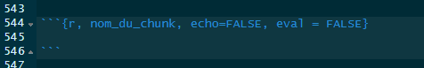
Le texte
Il est possible de générer du text entre les chunk pour donner des explications. Le texte peut être mise en forme:
Titre niveau 1: #
Titre niveau 2: ##
Titre niveau 3: ###
Mettre une puce: * ou +
texte en italique: entre * *
texte en gras: entre ** **
hyperlien: il suffit de placer l’adresse entre < >
Insérer une image
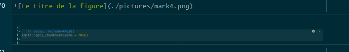
Render dynamique en HTML
Les onglets en html
Pour les sorties HTML, on peut organiser les sections en “onglets”. Il suffit d’ajouter .tabset dans les accolades { } qui sont ouvertes juste après le titre de la section.
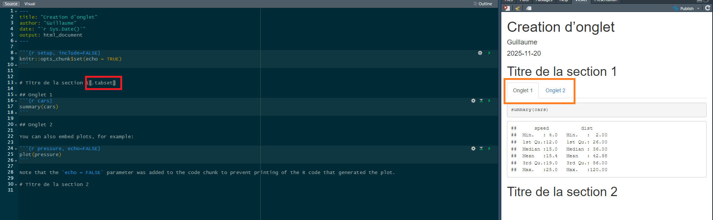
Les tableaux dynamiques
Dans un rapport HTML, vous pouvez imprimer des tableaux de données de telle sorte que le contenu soit dynamique, avec des filtres et des barres de défilement. Il existe plusieurs “packages” qui offrent cette possibilité.
Pour ce faire, avec le “package” DT, tel qu’il est utilisé dans ce manuel, vous pouvez insérer un morceau de code comme celui-ci :

ggplotly()
La fonction ggplotly() du package plotly permet de facilement rendre un ggplot() interactif. Il suffit de sauvegarder votre ggplot() et de le passer à la fonction ggplotly().
library(dplyr)
library(ggplot2)
plot_store <- iris %>%
ggplot() +
geom_point(aes(x = Sepal.Length, y = Sepal.Width, color = Species))
plot_store %>% plotly::ggplotly()Quarto
Quarto fonctionne un peu de la même façon que Markdown mais permet d’autres possibilité. Quarto, c’est la nouvelle génération de R markdown. Elle est présentée comme avancée et enrichie.
Les différences de syntaxe
les paramètres de chunk ne sont pas entre crochet mais en dehors et précédées de #|
les paramètres sont suivis de : et non =
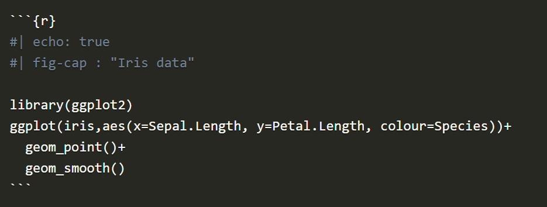
- On ne parle plus de “knits” mais de “Render”
Les nouveautés
Les equations
Les formules peuvent être écrites entre “$”.
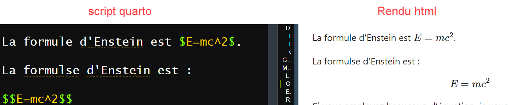
Ajouter un espace
En utilisant “:::” entre deux chunks.
Utilisation de python en natif (ou Java)
Il suffit de le specifier dans le chunk. Cela fonctionne même dans RSutdio.
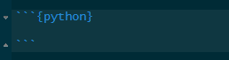
Integrer de l’interactivité
Il est possible d’utiliser des fonctionalités de shiny et de Java pour rendre le documents interactif (plus que markdown).
Shiny necessite de mettre le fichier html sur un serveur pour le rendre interactifs.
Et en Java je suis en train de creuser la question.
Quarto presentation
Quarto Offre une autre fonctionnalité, la possibilité de faire des présentation (type power point) dans R. Pour ce la on peut le lancer de deux façon:
- Nouveau fichier > Quarto Presentation
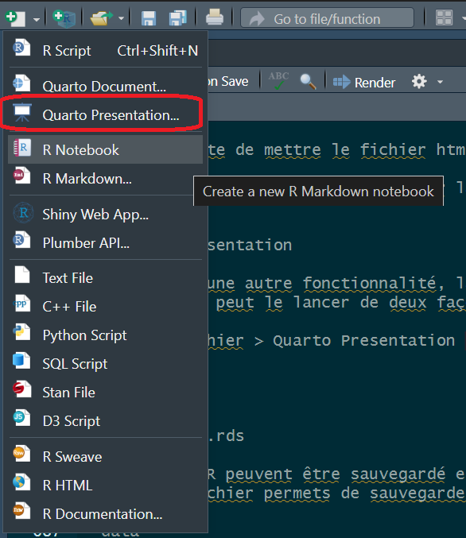
- soit en modifiant le haut de page -> format: revealjs

Presentation
Pour voir la presentation il suffit de faire un Redner comme sur un Quarto Classique.
Cette execution ouvre un nouvel onglet à droite “Presentation”. Il permet de lancer la presentation en cliquant sur “Present”.
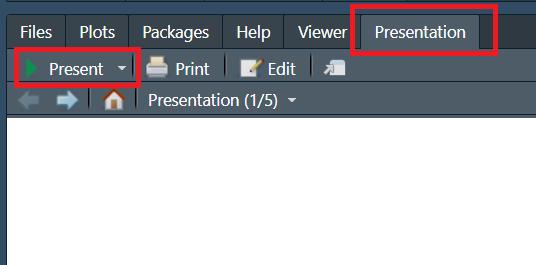
“Print” permet de le sortir en PDF.
Mise en page
Le document quarto se presente de la même façon.
Haut de page
Le haut de page doit contenir les informations classiques:
title
author
date
Le paramètre format ‘revealjs’ permet aussi des paramètres:
footer: “Example of footer”
theme: dark (beige / blood / dark / default / dracula / league / moon / night / serif / simple / sky/ solarized)
transition: slide / fade
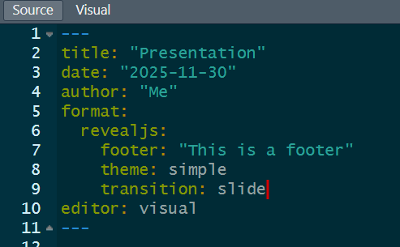
Ce qui donne ça:
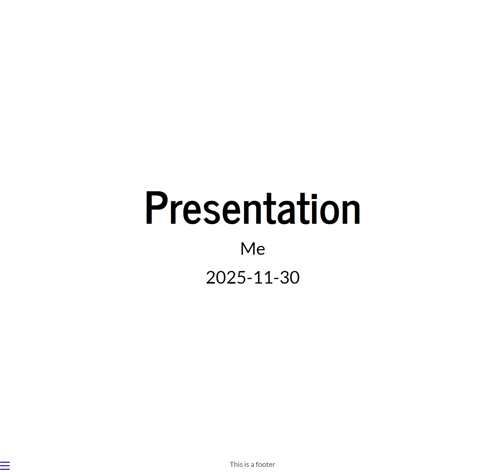
Slide
La suite du quarto s’organise de la même façon.
Commencer une slide
Un slide se commence avec ##. On peut mettre un titre à la suite (## Titre) ou non (##).
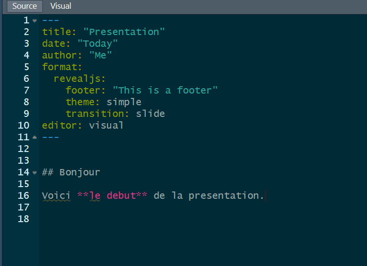 Qui donne :

Ajouter un background
On peut lui ajouter un fond. Il suffit de fournir une image (background.jpg).
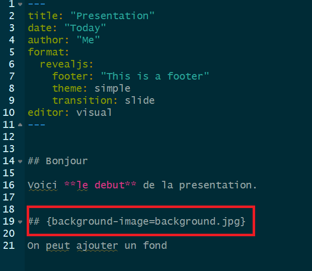
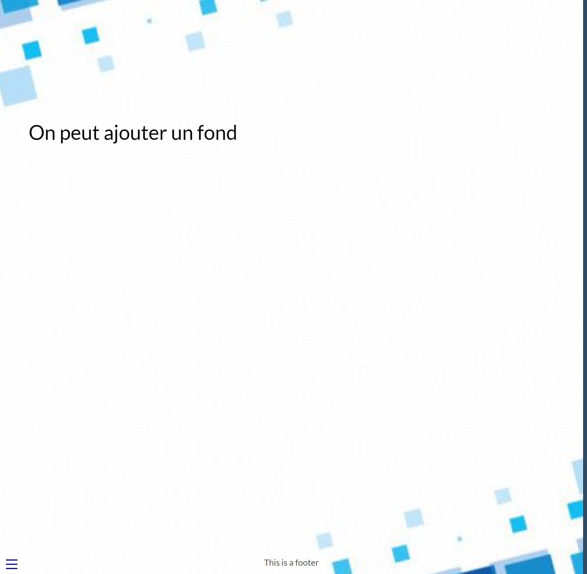
Si il y a un titre à la slide, le paramètre doit être collé au titre :
- Titre{background-image=background.jpg}
L’ajout du background se fait slide après slide.
Pour ajouter un background à la slide de titre, il faut le definir dans l’en tête de cette manière.
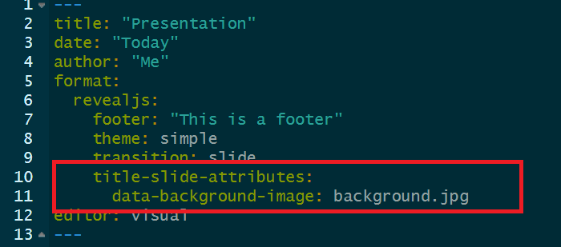
Les colonnes
On peut vouloir afficher cote à cote des sorties dans la même slide, comme un tableau et un graphique. Pour cela, on utilise des colonnes.
on initialise les colonnes avec une fence -> :::: {.columns}
on créé une première colonne -> ::: {.column}
- la colonne peut être parametré en largeur en utilisant “width”
on ferme la colonne -> :::
on ferme la fence -> ::::
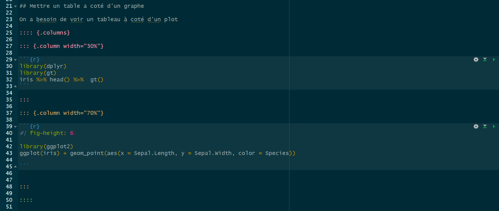
La fonction “gt()” du pcakge {gt} permet de rendre un tableau dynamique.
Un callout
On peut ajouter ce qu’on appelle un callout.
Il existe plusieurs forme de callout:
tip
warning
Et on peut lui ajouter un titre et du texte.
Animer une slide
On peut animer une slide, en disant à quarto de faire une pause. Pour cela il suffit d’utilsier 3 points avec une espace entre chaque à l’endroit de la pause:
- . . .
Cette pause va d’abord afficher le callout puis la table iris.
Afficher le code
Par default, dans une presentation, quarto presente seulement les sortie de code et pas le code lui même. On peut le forcer en ajoutant les paramètres suivant dans le chunk:
- echo: true
L’affichage du code dans Quarto peut être parametré:
#| fig-align: center -> pour la position des figures
#| output-location: column -> la position du code par rapport au plot
column : donne en deux colonne
fragment : instaure une pause dans l’animation
slide : deplace la figure sur une deuxième slide
Highlight code
On peut mettre en avant des lignes de codes specifiques, très pratique pour expliquer un code en particulier. Pour cela on peut utiliser:
- #| code-line-numbers:
On lui donne les numéros de ligne (basé sur la slide) que l’on souhaite mettre en avant:
- #| code-line-numbers: “3-5” -> va montrer les lignes 3 à 5
On peut aussi mettre en avant plusieurs lignes de code à la suite, dans différente slide :
#| code-line-numbers: “3-5|6*7” -> va montrer les lignes 3 à 5 puis 6 et 7
#| code-line-numbers: “|3-5|6*7” -> va montrer tout le code, puis les lignes 3 à 5 puis les lignes 6 et 7
Option tableau et ecrir sur diapo
Il est possible d’écrire sur les slide en ajoutant une option au format dans l’en tête:
- chalkboard: true
Confetti
Et le clou du spectacle, la fraise au sommet de la montagne de chantilly: on peut faire apapraitre des confetti !!! Le package est disponible sur github https://github.com/ArthurData/quarto-confetti.
Installation
Il faut installer le package dans le projet de la presentation. L’extention JavaScript doit être installé en copiant dans le terminal :
quarto add ArthurData/quarto-confettiUsage
Il faut juste modifier l’en-tête de la présentation en ajoutant:
---
title: "My presentation"
format:
revealjs: default
revealjs-plugins:
- confetti
---On peut aussi ajouter des paramètres pour personnaliser les confettis:
---
title: "My presentation"
format:
revealjs:
confetti:
particleCount: 150
angle: 90
spread: 360
startVelocity: 25
gravity: 0.65
drift: 0
ticks: 400
colors: ["#0366fc", "#f54281", "#1fd14f"]
scalar: 0.7
revealjs-plugins:
- confetti
---Il suffit de cliquer sur c pour lancer les confettis et de placer sa souris à l’endroit voulu !!

Merci ArthurData !
Tips
.Rdata et .rds
Les fichiers R peuvent être sauvegardé et réutilisé sans passé par des .csv, .gpkg ou autre. Ce type de fichier permets de sauvegarder tout objet R:
data
model
figure
etc.
On peut utiliser .Rdata pour sauver un ou plusieurs objet R.
# un objet
save(data, file = "./EXPORT/data.RData")
load("./EXPORT/data.RData")
# plusieurs
save(data1, data2, file = "./EXPORT/data.RData")
load("./EXPORT/data.RData"){browser}
Quand vous travaillez sur une fonction, dans un map ou un lapply, la fonction browser(), permet de rentrer en mode ‘debbug’. Cela permet d’être dans la fonction quand elle tourne (dans son environment) et de travailler dessus.
# exemple dans une fonction
function_test <- function(x){
browser()
division = x/2
return(division)
}
function_test(x=2)
# exemple dans une fonction map {purrr}
1:5 %>%
map(.f = function(x){
browser()
division = x/2
return(division)
})
# Q + Enter to exitRaccourci clavier
Ctrl + Enter : exécuter les lignes sélectionnée
Tab : autocomplétion
Ctrl + A : selectionner tout le code
Ctrl + I : réindenter code
Ctrl + Shift + A : reformater code
Alt + Up/Down : déplacer une ligne sans faire copier-coller
Ctrl + Shift + M : insérer pipe %>%
Alt+ 6 (Windows) : insérer opérateur assignation <-
Ctrl + Shift + flèche : selectionner
Ctrl + Shift + C : mettre un # devant les lignes